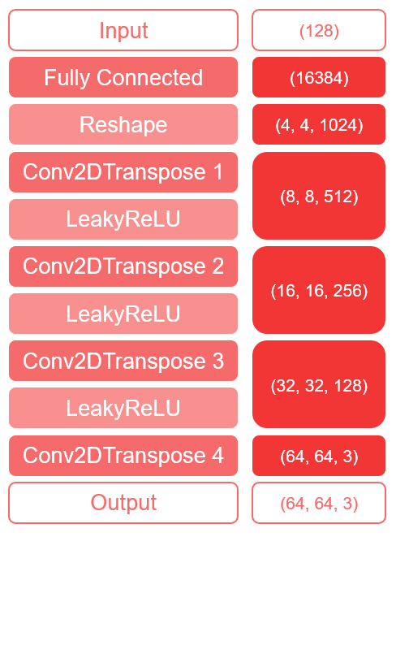

The image to the left (from
The image to the left (from The Generator

As shown on the left, the generator takes an input vector of size 128 and uses a fully connected layer in conjunction with 4 convolution layers to upscale the latent space to the correct image size.
The ReLU functions all use an alpha of 0.2 and the convolution layers use a kernel size of 5 and a stride of 2. The number of filters used in the convolution layers are 512, 256, 128, and 3 respectively. The fourth and final convolution layer also uses a sigmoid activation function.